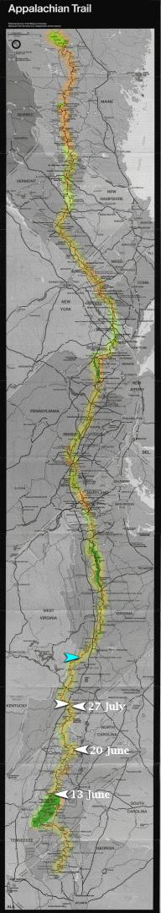

| Home | The Fox | Statistics | Maps | Churches |
StatusConfirmed - Evening 27 June 1998:Confirmed - the Fox reached Partnership Shelter (VA) Confirmed - 516.9 miles complete (23.87%) Confirmed - 1648.6 miles to go (76.13%)
Projected - Evening 3 July 1998: Partnership ShelterI have recently received word that the Fox contacted his base at 6pm the evening of Saturday 27 June, from the Partnership Shelter in Virginia. He is reported to be in excellent spirits. NaPensee was at that point one day behind him. The Fox had been having trouble with one knee, but it has since been doing much better.
He reported a successful side trip to the summit of Mt Rogers
taken earlier in the week.
At |

Legend
|